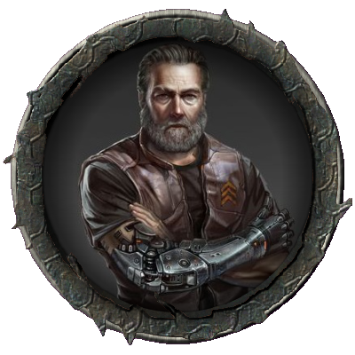

Player Characters
Captain Sean Bravo
"Back in '82, I was the cap'n of the best, fastest, coolest ship on the Frontier. My good buddy Sorensen, Zoe, Monroe... man, we were the GOATs. Makin' so much moolah, bangin' babes between destinations, and gettin' higher than a kite on the 4th of July. That was the life. Boy do I wish I could go back in time. The Frontier could've been mine.
Yet I done fucked up during that one haul. 'Sore was OOC, and I had to dock the ship myself. I might not'ta been in the best shape to fly - drugs and booze don't really mix, as it seems - and I crashed ol' Cassie into Novgorod. Monroe bit the dust, and we got into some deep shit with the ICCDEFG or whatever. They sued my ass, stole most of my moolah to pay off the damage to the station.
I held onto some of my personal shit - my big ol' guns, my badass suit, some shit like that, but my ship, my vehicles, and, most importantly, me money... all that shit's gone, and I'm stuck on some barren rock - Devil's Peak.
One day, man. One day, I'll make a fortune, and I'll retire as a king."
Jason Sorenson
Best known for his skills as a medevac pilot, Sorensen later applied for CAS sorties after the battle of Jureen. He garnered admiration with the USCMC ground troops he protected. Attempts to stifle his smug satisfaction with this knowledge by his superiors all failed. Remembered as one of the ace pilots from the Corps, Captain Sorensen left the USCMC with honorable discharge after serving four tours. This came at his own request, as he saw a business opportunity with his friend Sean Bravo.
Sorensen and Bravo started a freelance business together, and were soon proud co-owners of the USCSS Cassandra, which proved to be Sorensen's only true love. Affectionately calling her "Cassie", the M-class Lockmart Bison 88-G was in Sorensen's own words "A goddamn fine piece of metal ass to fly." Spending way more time than neccesary learning the exact feel and handling of the hundreds of tons of alloy, he became very quickly fond and adept of their new ride and home in space.
The crew grew, picking up Zoe at some point and several others on their adventures. However, as the danger grew, so would the pay, and it did not take long before Sorensen and Sean's crew were in trouble on a regular basis while chasing the sweet scent of "moolah".
Distaster struck though when Sean had on a rare occasion taken control of the ship and a horrible accident had ripped not only their ship and an adjacent space station apart, but also their crew. Monroe was killed and their problems had caught up with them. Sorensen had trouble forgiving Sean for the crash, but their friendship miraculously survived. They had seen worse, or so they thought. Now in a world of shit, next stop would be Devil's Peak. "Fucking great."
Zoe Price
Zoe's parents were working for Weyland Yutani. However she escaped/got kicked out from home after she turned her dying grandpa into a Zombie. She is obsessed with experimenting on living creatures, humans, animals, and aliens maybe.
After leaving home she worked at a tattoo shop for some bucks and operated underground surgeries for extra money and practice her skills. She met Sean and Sorenson while they were being hunt down by enemies and she patched them up, they took her as their crew and she's been following them ever since.
She also have a habit for growing illegal plants. And she uses her recorder to log everything.
After the strange crash on Novgorod station she was sent here in Devil's Peak with her crew mate Sorenson and Captain Sean.

Adam Baker
Adam grew up in a family of roughnecks who worked themselves to the bone everyday just to barely scrape by, and he never understood it. No matter how little his parents made, they never chose to do anything else with there lives. They were always content to just get through the day and waste their hard-earned cash at the bar, drowning their frustrations in cans of Aspen. Desperate to avoid the same fate, Adam studied business at school as he grew older in attempts to one day land a well-paying job. His hard work payed off when he landed a internship and eventually, employment, at Seegson. Desperate to impress, Adam prided himself on performing anything that was asked of him, behavior that was very much appreciated by his bosses. As a result, Adam quickly climbed the corporate ladder to become a corporate executive. Eventually, he was given an assignment to oversee the colony Devil’s Peak after the previous agent had resigned for reasons not disclosed to him. He happily accepted, believing that it be a nice change of scenery, and could land him another promotion.
Hana XIII
Hana's are military/pleasure models, they became popular with executives for both reasons. Designed by Hana Takahashi who took Hana I as her wife after going in a new direction with the original design behind them, which was to manage the stresses and loneliness of deep space exploration. The models enable a can literally have a beautiful women or man next to them in bed and show off at functions etc. The problem that happened is some people actually feel in love with their models, leading to lost contracts. As a result Hana's are barley kept in use on many lower tiers of space travel. They now exist by virtue of the executives and high rank socialites that still love them. In modern days they are the domain of executives instead of the colonists/truckers they were created for.

Roy "Bolt" Stark
A roughneck mechanic who was an ex-prisoner and finished a successful rehabilitation and reintegration and decided to start a new life in Devil's Peak colony, far away from people that might know him and his background. Being among strangers for him feels like freedom. He lost his right arm and now has a prosthetic arm as a replacement. Roy was imprisoned for 25 years in a maximum security prison on LV-666, he paid for his sins dearly and his right arm is a constant reminder of his past. Roy got a son just after he got in prison he never seen him in person, the only thing he has is his baby photo.
Pvt. Nile Raine
Named after the African river, Nile grew up among colonists and was restless to get away from the crowded environment. At the first opportunity, he joined the Marine Corps and excelled through the training. His positive demeanor and ability to keep soldiers cool in a fight helped rise him up to 1st Lieutenant.
That all came crashing down, when he refused to fire on enemy colonists and assaulted his commanding officer. Demoted to Private, he has been shipped off to the mining colony Hells Peak as punishment to serve as Security there. Niles begrudgingly accepts the assignment, all the way, not regretting his actions at all.
Jeremy Mathers
This documentation is currently classified.